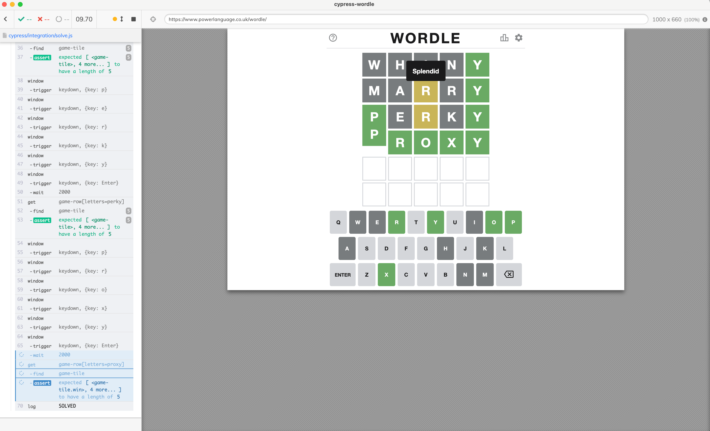
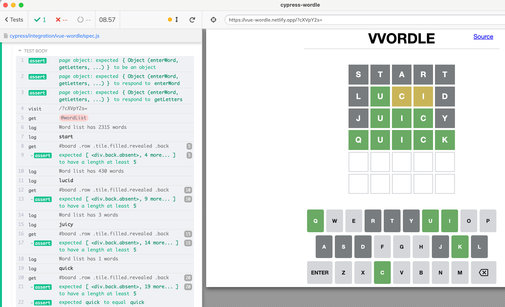
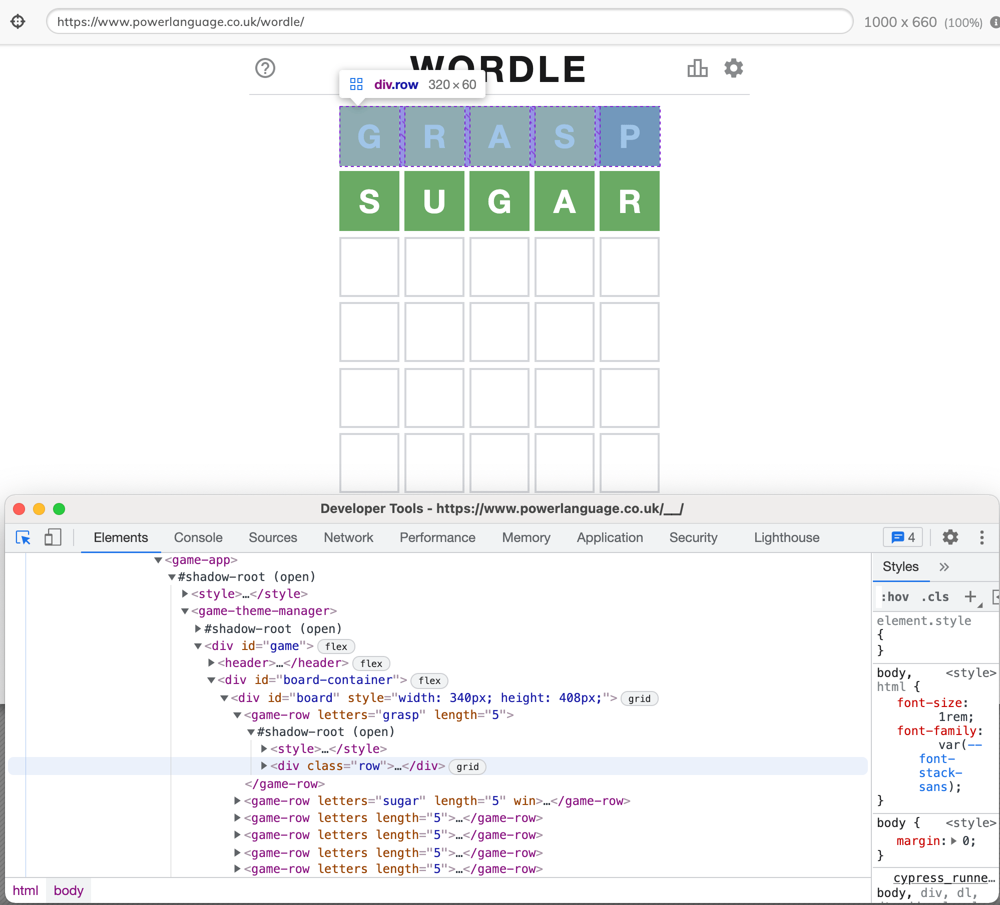
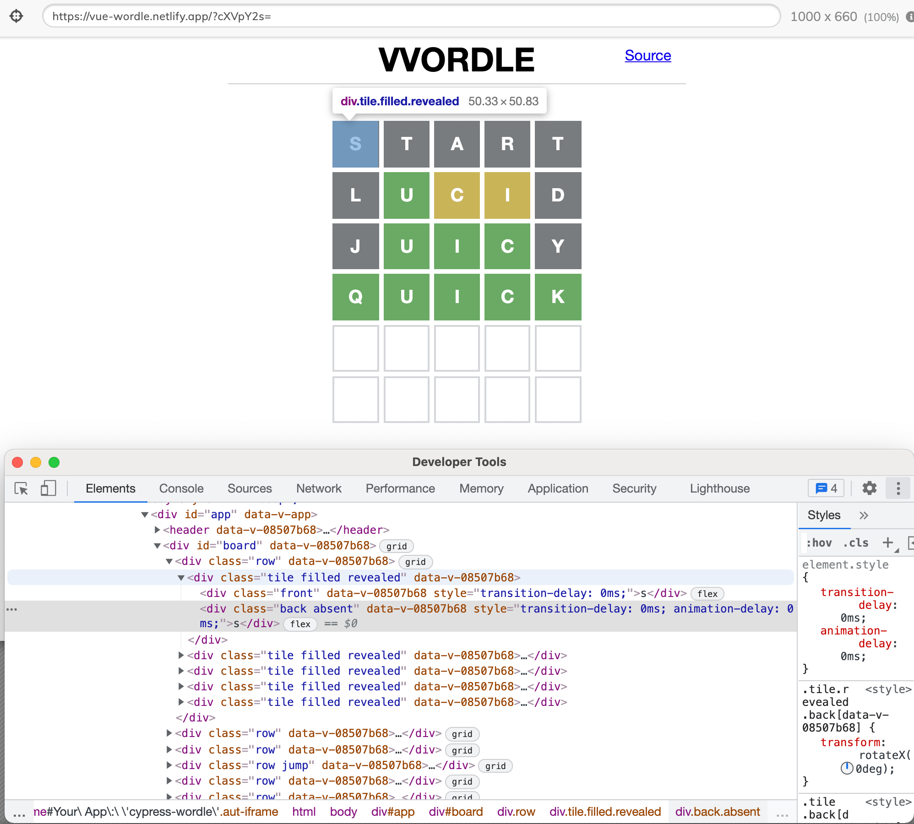

The game Wordle is pretty popular, and I have been solving / playing it using Cypress for a while. You can find my code in the repo bahmutov/cypress-wordle and multiple short videos showing my test implementations in this YouTube playlist.

Recently, other Wordle game implementations have appeared. For example A Greener Wordle let's you play using only the words related to the climate crisis. Another version lets you encode the target word via URL query parameter so your friends can guess the word you send them. For example, we can send the URL with the word "quick" encoded using base64 algorithm and appended to the url as cXVpY2s=. The test correctly calculates the answer starting with the word "start" in four steps.

How can the same code solve the two different implementations of the game? If we inspect the page structure, the two games are implemented very differently. The original game is implemented using WebComponents with shadow DOM elements everywhere.

The Vue version uses a single DOM with its own classes and attributes used to show each letter's status.

The algorithm to solve the game is independent of the page. To solve the game we need to pick a word from the word list, enter the letters into the game, collect the game's feedback (which letter is at the correct position, which letter is present, and which letter is absent). We use the feedback to prune the word list, and pick a word again.
The page objects
We can abstract entering the word and collect the letter feedback by using a page object. It will be a simple JavaScript object with methods to call the Cypress commands. A page object is specific to the implementation - thus we will have one object for the first Wordle game implementation, and another page object for the second implementation.
Here is the first page object.
1 | export const Playing = { |
Here is the second page object - notice how it uses "keyup" instead of "keydown" events to input the characters.
1 | const silent = { log: false } |
The page object can have other methods to do additional actions on the page, like Playing.solved() to close the popup at the end.
You can watch a short video where I make a page object below.
Solver
Now that we have a page object to perform actual operations on the page, let's use it from a function that solves the Wordle. The solver function is almost pure - meaning it does not touch the page and does not have to deal with the particular implementation. If it needs to enter the word or interact with the page, it uses the page object passed as a parameter. Here is a short version of the solver without details
1 | export function solve(startWord, pageObject) { |
Notice how the tryNextWord uses pageObject.enterWord and pageObject.getLetters method calls to access the page?
Specs
The individual specs are where the solver and the page objects are put together. To solve the first Wordle implementation, we pick the first page object to pass to the solver function.
1 | // use page objects to close the modals, solve the puzzle, etc |
Tip: I like having different page objects for different stages of the page. In this case, there is a page object called Start to close with the initial popup.
The spec to solve the Vue version of the game imports its own page objects but calls the same solve function.
1 | import { Playing } from './pages' |
Works beautifully. If you prefer to learn how to use page objects, solvers, and specs, watch the video below.